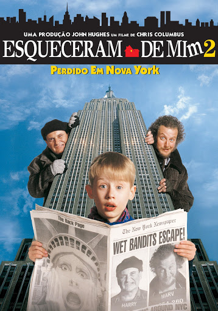

Em Esqueceram de Mim 2: Perdido em Nova York, Kevin McCallister se separa da família no aeroporto. Ele embarca por engano para o voo de Nova York enquanto os pais vão para a Flórida. Sozinho na grande cidade, ele usa o cartão do pai para ficar no luxuoso Hotel Plaza, mas reencontra os dois bandidos que havia enfrentado no primeiro filme
Clique aqui para mais informações do filme